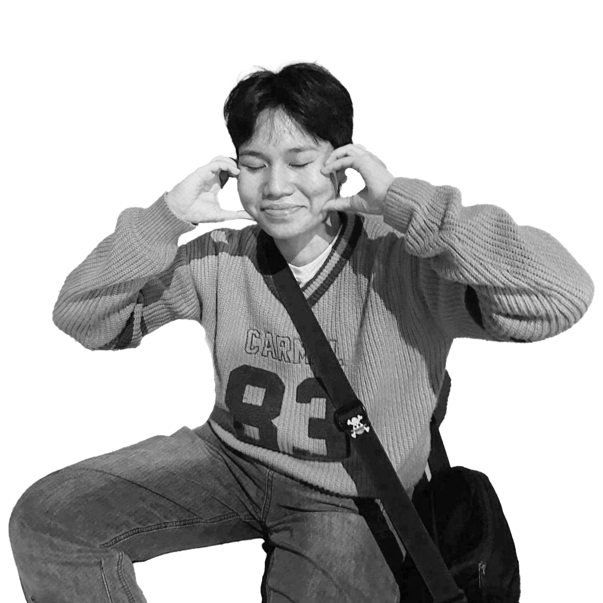

|Franz Saragena
Web Developer. UI/UX Designer.
|SKILLS
- Graphic Design, Figma Wireframing/ Layouting, Game Development, Programming|Language Known:
- Python(Pygame), Java(Javafx), Javascript, R, C
Web Developer. UI/UX Designer.
|SKILLS
- Graphic Design, Figma Wireframing/ Layouting, Game Development, Programming|Language Known:
- Python(Pygame), Java(Javafx), Javascript, R, C